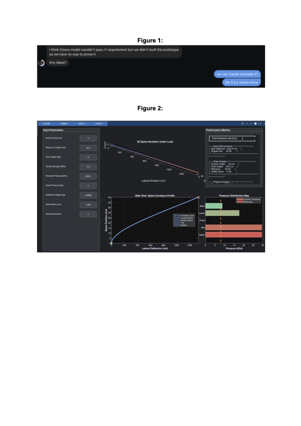
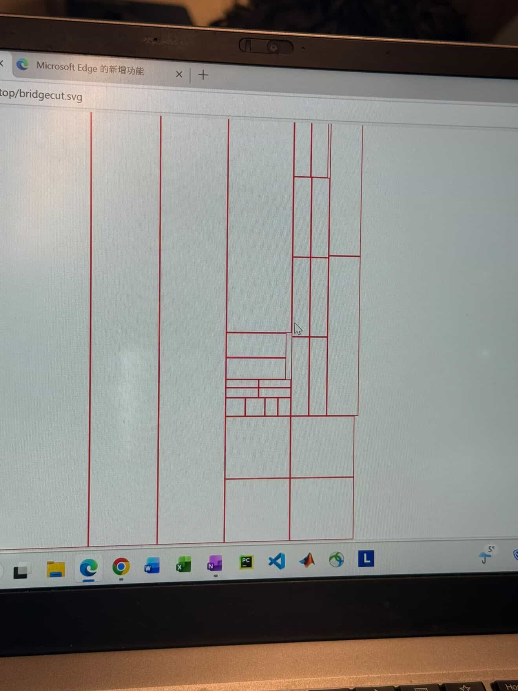
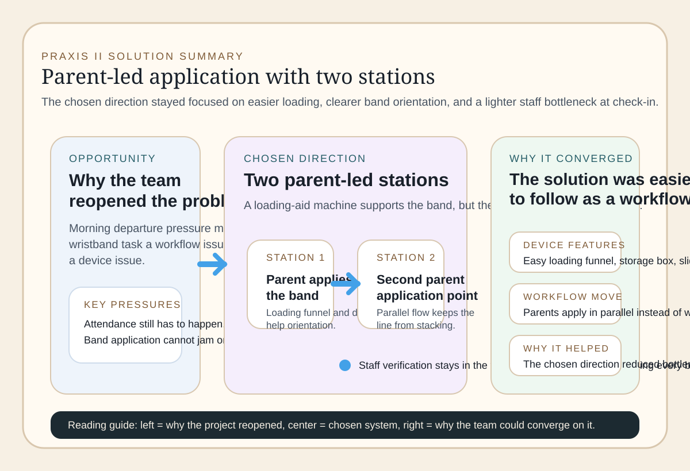
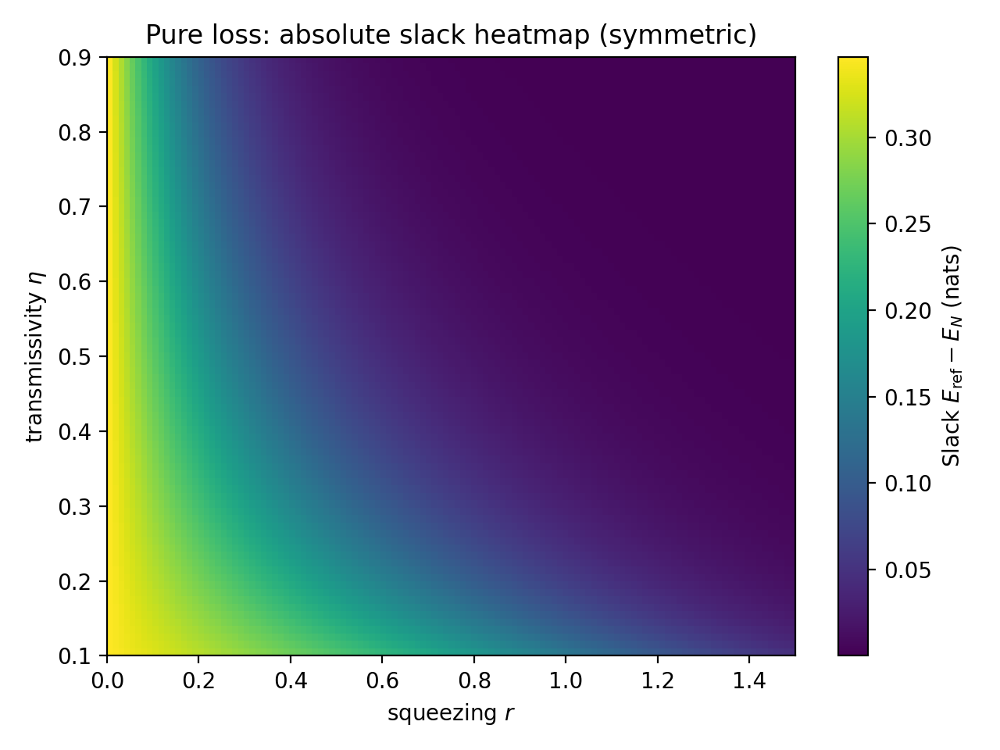

Position Statement
My current design position: what I value, how I approach ambiguity, and what bias I am correcting.
Mohamed Elsayed
This portfolio presents my approach to engineering design through three projects and the CTMFs that informed them.
Table Of Contents
My current design position: what I value, how I approach ambiguity, and what bias I am correcting.
Design products, process decisions, and team credit for Praxis I, CIV102, Praxis II, and Gaussian work.
Concise assessment of the concepts, tools, models, frameworks, and linked source artifacts.
Project Map
Team-based redesign work focused on excess strap snagging, adjustability, comfort, and manufacturability.
Matboard bridge design supported by drawings, calculations, and analysis code for load envelopes and failure modes.
Team-based workflow redesign that converged on a parent-led two-station system with a loading-aid prototype.
Analytic and computational work on entanglement thresholds in symmetric phase-insensitive Gaussian channels.
Each case shows a different pressure point in my design process.
Praxis shows how I frame a messy user problem and how long I can keep options open before that exploration starts working against convergence.
The bridge tests whether analysis survives contact with drawings, fabrication tolerances, glue strategy, and actual assembly constraints.
Praxis II tests whether a concept that saves staff effort still holds up once timing risk, fallback work, and user compliance are made explicit.
The Gaussian project tests whether simplification earns its authority or only looks convincing because the representation is mathematically clean.
Artifacts At A Glance

Requirement notes and the backpack model show criteria and representation becoming linked.

The layout turns the bridge section into pieces that could be cut and assembled.

Parents apply bands in parallel while staff stay in the broader verification flow.

The heatmap makes it possible to see where the reduced method remains informative and where it starts to drift away from the exact result.
Praxis And CTMFs
Praxis is treated here as an iterative cycle rather than a neat checklist. It helps me describe where a project widened, where it narrowed, and where representation changed what the team could actually decide.
The handbook focuses on concepts that changed decisions: what I used, what it revealed, and where it failed.
{kind=link}